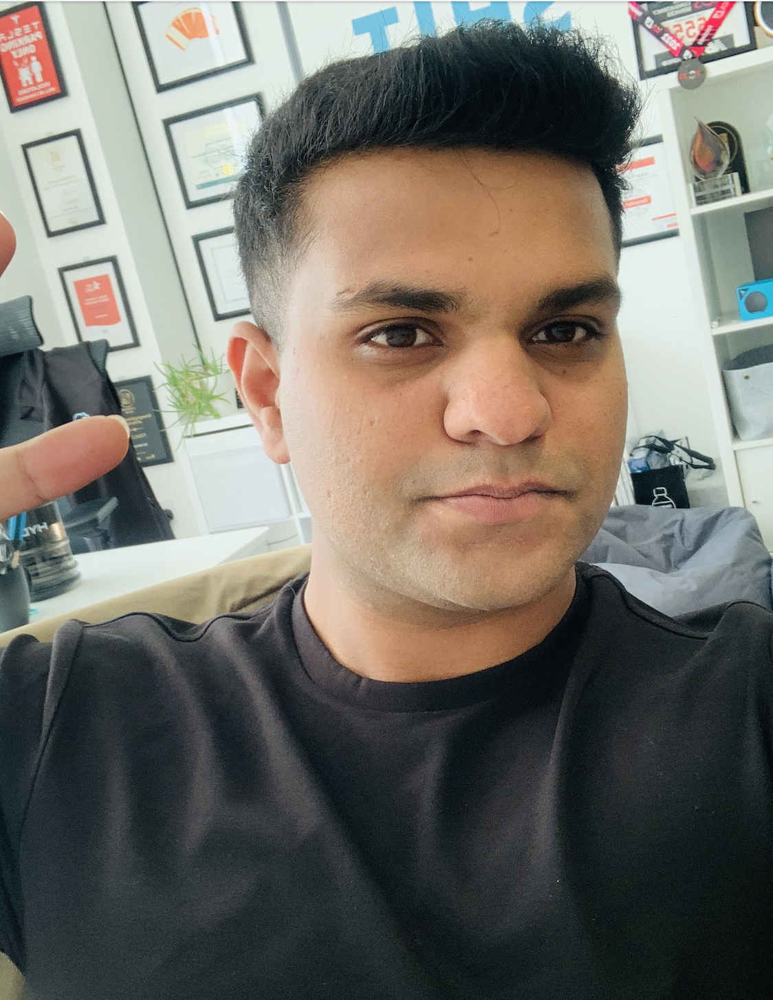

Hello, my name is Abrar
I'm a Cyber Analyst
Fire me up No Thanks!What do I do?
I work to protect computers, phones, and other smart devices from getting hacked and infected.
How do I do it?
I use my cyber skills to protect your devices and data. If anyone tries to get in without permission, I take care of it.
How my cyber skills help?
As a certified assessor, I have assessed over 65+ different businesses in the UK to meet the right cybersecurity standards and helped them secure their devices
But what brought me into cybersecurity and why do I do it? See my About Section to checkout my story!

My Story from Start
Cyber Journey
Abrar after completing his college got into computer science not by choice though cuz some other plans didn't worked out sadly. At this point I had no idea of how computer science work.
No Idea what to do
Cyber Meter
During my 3rd year in the university i took cryptography as an elective, where it was the first time i got to know how we protect our devices through encryption and signatures.
Found Something Interesting
Cyber Meter
I started studying more. I realized I like this and want to do this. I started making small programs around encryption, steganography and bruteforcing.
Playing Around Practically
Cyber Meter
As i got a little good, one day i saw someone on fb asking for help to do a code, i helped and i realized what if other people had projects like this too and I could make some money from it? As a side gig i went on to fiverr and created a gig and started giving services as a cryptography expert. So i used to code different programs for people that involved securing a messaging system through cryptography or general projects like developing a password cracker for zip files.
Found a way to use my Skills
Cyber Meter
At this point i was kind of liking it more and if anyone could have asked me what i want to do. i had the answer and that was cybersecurity. though at that time data science, AI was the buzz word that everyone wanted to get into but I was so focused i remember I was the only person in my graduate directory who wanted to go in cyber. After graduating, i wanted to get a job but unfortunately the cyber market in pakistan was not established also cyber is a diverse field, (pentesting, incident response, GRC) I thought in order to get more oppurtunities, It would be better if I move abroad. Unfortunately, covid hit at its peak and travel restrictions were there.
Many companies were already laying off many people, and times were getting tougher. But wasting time was not an option. So, I worked as an intern at a telecommunication company as a network engineer. I learned more about how configurations were implemented. (It wasn't a new thing as I already had a networking certification from Cisco in my university program).
Didn't had Professional Oppurtunities
Cyber Meter
After a year, conditions were still not suitable, and my internship came to an end. It was a challenging time, so I started professionally as an IT Security Engineer. Here, I was working on a city's safecity project, which was a government-owned initiative aimed at installing CCTV cameras and monitoring systems in the city to enhance digital safety. I dealt with the security aspect of the project, conducting risk assessments of assets like CCTV cameras, data servers, and control center laptops/desktops, as well as firewalls/routers. I ranked threats based on the impact and likelihood of vulnerabilities being exploited on these assets, documenting high-valued threats and conveying this knowledge to stakeholders. This presented the challenge of explaining these technical aspects in a non-technical manner, a valuable skill in cybersecurity.
Took Whatever Available Experience
Cyber Meter
During my daytime job, I was also pursuing a master's in information security, a two-year program that I considered an opportunity for growth rather than a problem. While managing both was tough, my enthusiasm for studying and exploring cybersecurity made it a fulfilling experience.
Never Stopped Studying!
Cyber Meter
I spent a year in IT Security Engineering and felt that I had mastered my work. However, I was eager to explore the "red side" of cybersecurity, diving into the mindset of a hacker and discovering how they perceive and exploit various devices.
As the COVID wave began to settle down and normalcy returned, I started seeking opportunities in the red team, realizing that Pakistan lacked such prospects, and the future of the country's cybersecurity landscape appeared uncertain. To pursue my passion, I made the decision to move abroad.
My next step was enrolling in a Master's program in Ethical Hacking and Cybersecurity at Abertay University in Dundee, Scotland. The program was highly focused on the red team aspect of cybersecurity, precisely what I was looking for to deepen my expertise in this field.
Coming to Scotland as an international student presented its own set of challenges, including adjusting to a new location, interacting with new people, adapting to a different language, and acclimating to a new culture. Initially, it was a difficult transition, with the primary challenge being survival in this unfamiliar environment. However, as time passed, I gradually settled in.
Once I had acclimatized to the academic side of things at Abertay University, I found myself missing my old routine of combining work and study. In pursuit of opportunities, I learned of a part-time job opening through a friend, which I was fortunate to secure. This job involved serving drinks and pasta to customers at a small restaurant, marking my first experience in part-time employment. While it was a novel experience, I quickly developed an appreciation for it, finding it enjoyable.
Sudden Change of Environment, Culture & Industry
Cyber Meter
I always had the understanding that my part-time job was a temporary arrangement, driven by my deep interest in the field of cybersecurity, which had motivated my move to Scotland. In a somewhat unconventional move, I embarked on a 12-hour one-way bus journey from Dundee to London solely to attend a cybersecurity conference. This decision might sound unusual, but I held the belief that to advance in my field, seizing such opportunities was crucial in bringing me closer to my goals. During these conferences, I absorbed every piece of information available, learning about the latest trends in the cybersecurity industry and the expectations of companies when hiring fresh graduates. This knowledge was invaluable if you truly grasp its significance.
Got out of my Comfort Zone
Cyber Meter
In addition to soaking up knowledge at these conferences, I spent an hour each night improving my professional presence. I carefully crafted my CV, polished my LinkedIn profile, built a personal website, and created a portfolio displaying my cybersecurity projects.
After three months of juggling part-time work and constant self-improvement, TechForce gave me a call. I had applied for a job as a cyber analyst with them. I went through the interview process, and it ended with me getting the job. In just five months in the UK, I had achieved my goal of working in my chosen field, and the happiness I felt was indescribable.
With this new job, I was incredibly excited. I started attending various conferences and connecting with different people. This time marked a big change in my life as my viewpoints expanded, and new opportunities opened up before me.
Polished my Portfolio to Best
Cyber Meter
I've been working as a cyber analyst for eight months now, with a focus on being a cyber auditor. I've also become a Certified Cyber Essentials and Cyber Essentials Plus assessor, which is a basic security standard here in the UK that helps companies enhance their security. So far, I've certified over 65 companies in the UK and continue to do so.
Took Every Challenge
Cyber Meter
Looking back on my journey, I see many hurdles that could have derailed me, but what stands out was focus to achieve what I wanted. This determination is key because it helps you stay focused on what truly matters in the long run. You can do this too. Just keep your goal in mind and make a little effort every day. Don't worry about the results; if you enjoy what you're doing, you'll find your place.
Best of luck to you!